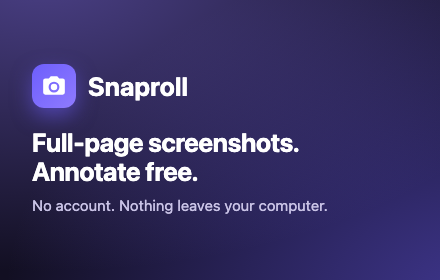
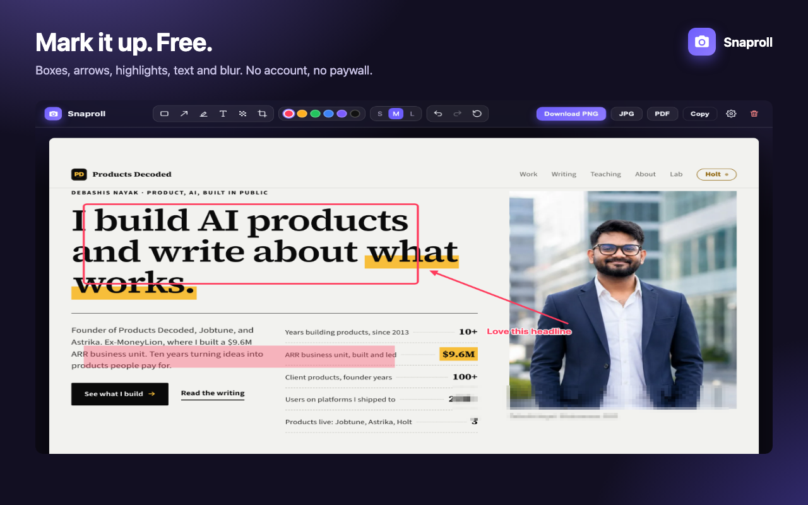
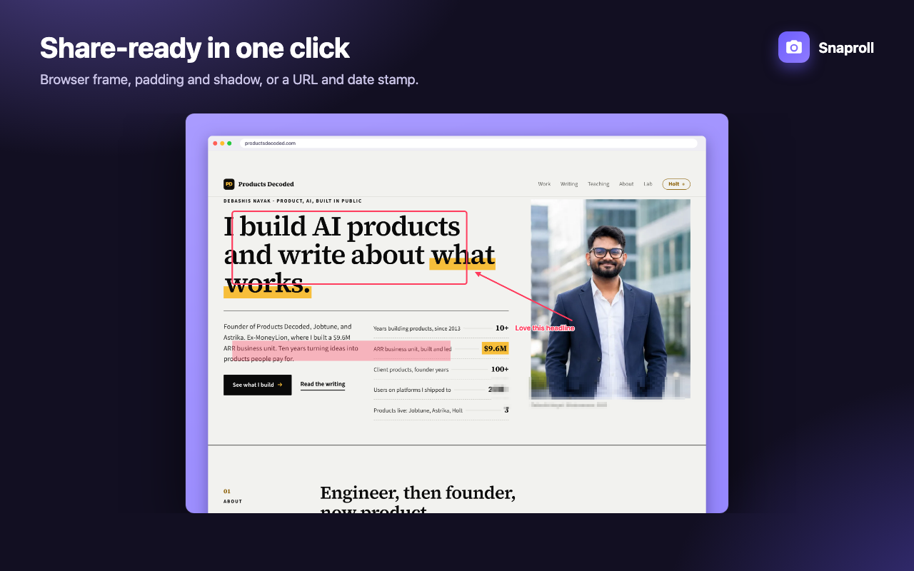
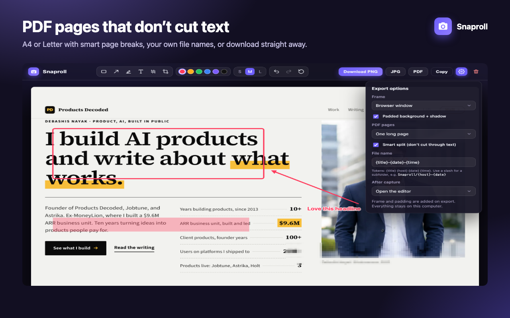

Snaproll v1.3.0 on Microsoft Edge Add-ons
Free listing. Review takes up to 7 business days. Everything to paste is below.
Before you upload, test once in your own Edge or Chrome (2 min). v1.2.1+ drops the "read and change all your data on all websites" permission and runs on
activeTab only. That makes review faster and the install prompt friendlier. Automated tests can't fake a real toolbar click, so check it by hand: edge://extensions → Developer mode → Load unpacked → /Users/debashis/aios/projects/fullshot. Then capture (1) a long article, (2) Gmail, (3) the same page using Alt+Shift+S. If any of them fails, tell me before submitting.
1. Steps
- Go to partner.microsoft.com/dashboard/microsoftedge and sign in with a Microsoft account. First time only: register as an Individual developer. It's free, with email verification.
- Click Create new extension and upload
/Users/debashis/aios/projects/fullshot/dist/snaproll-1.3.0.zip. - Availability: Visibility = Public. Markets = all markets.
- Properties: fill in the fields from section 2.
- Store listing → English: description, logo, promo tile, screenshots and search terms from sections 3 and 4.
- Submit: paste the certification notes, then Publish.
2. Properties
Category
Productivity
Privacy policy required?
Answer "No" to "Does your extension access, collect or transmit personal information?", then add the URL anyway:
https://productsdecoded.com/snaproll/privacyWebsite
https://github.com/debashisn94/snaproll-extension
Support contact
https://github.com/debashisn94/snaproll-extension/issues
Mature content
No
3. Listing text
Display name (comes from the manifest)
Snaproll — Full Page Screenshot
Short description
Snap the whole scroll. Full-page screenshots with free annotation, blur, frames and paged PDF. Nothing leaves your computer.
Description
Snaproll screenshots the whole web page, not only the part on your screen, and lets you mark it up before you save it. Click the Snaproll icon or press Alt+Shift+S. It scrolls the page, captures each part and stitches them into one image. Sticky headers and pop-ups don't repeat down the page, code blocks and other scroll boxes open up to their full length, and ads and cookie banners are left out (you can switch that off). App-style pages like Gmail or Notion, which scroll inside a panel, work too. Then edit in the same tab: • Box, arrow, highlighter and text labels • Blur to hide emails, names or account numbers • Crop, with undo and redo • A browser-window frame, a URL and date stamp, or a padded background for slides Save as PNG, JPG or PDF, or copy to the clipboard. A PDF can be one long page, or A4 or Letter pages with the breaks placed between lines of text. Set your own file name and folder, or skip the editor and download straight away. It's all free. No account, no sign-in, no watermark, no paid tier. Snaproll only reads the tab you click it on, collects no data and makes no network requests. The code is open source on GitHub.
Search terms (7 max)
full page screenshot; screen capture; scrolling screenshot; annotate screenshot; blur screenshot; webpage to pdf; screenshot editor
4. Images
/Users/debashis/aios/projects/fullshot/store/logo-300.png

/Users/debashis/aios/projects/fullshot/store/promo-440x280.png

/Users/debashis/aios/projects/fullshot/store/screenshot-01-annotate.png

/Users/debashis/aios/projects/fullshot/store/screenshot-02-frames.png

/Users/debashis/aios/projects/fullshot/store/screenshot-03-options.png
5. Notes for certification
Paste into "Notes for certification"
No login or test account is needed. To test: open any long https page (for example https://en.wikipedia.org/wiki/Web_browser) and click the Snaproll toolbar icon, or press Alt+Shift+S. The extension scrolls the page, captures it, restores the page and opens its editor (editor.html) in a new tab. In the editor, try the box (R), arrow (A), text (T) and blur (B) tools, then Download PNG or PDF. Permissions: activeTab and scripting are used to capture and scroll only the tab the user clicked. storage/unlimitedStorage pass the large image to the editor tab and keep export options. downloads saves the file with the user's chosen name and folder. No remote code, no analytics, no network requests.
6. After it goes live
- Partner Center shows installs and ratings under Analytics. Check them weekly.
- I'll update the Snaproll card on productsdecoded.com to link to the Edge listing instead of GitHub.
- If installs move, it's worth the $5 for the Chrome Web Store. The same zip works there.